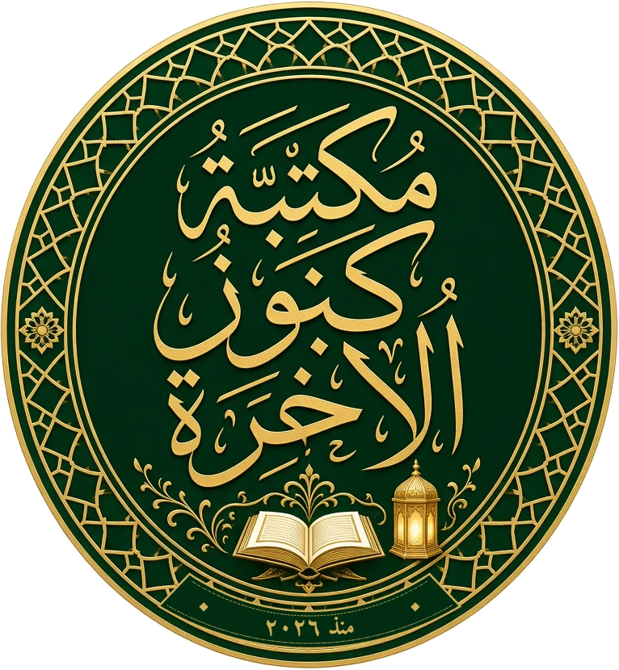

কুরআনের আয়াতের অর্থ ও হাদিসের উদ্ধৃতি স্বীকৃত অনুবাদ ও উৎসের সাথে মিলিয়ে দেওয়া হয়েছে; উৎস বইয়ের শেষে
«তথ্যসূত্র» অংশে দেওয়া আছে। ফন্ট: Noto Serif, Noto Serif/Sans Bengali (Google, SIL Open Font License) ও Amiri (SIL Open Font License)।
আপনি যে বইটি হাতে নিয়েছেন, সেটি একটি নতুন ভাষার দরজা। কিন্তু আমি বিশ্বাস করি, এটি শুধু একটি ভাষার দরজা নয়, একটি নতুন জগতের, নতুন মানুষের এবং নতুন দায়িত্বের দরজা। এই বিশ্বাস আমার নিজের নয়; আমি তা পেয়েছি আল্লাহর কিতাব আর তাঁর রাসূল ﷺ-এর জীবন থেকে।
«আর তাঁর নিদর্শনসমূহের মধ্যে রয়েছে আসমান ও জমিনের সৃষ্টি এবং তোমাদের ভাষা ও বর্ণের বৈচিত্র্য। নিশ্চয়ই এতে জ্ঞানীদের জন্য রয়েছে নিদর্শন।»
সূরা আর-রূম ৩০:২২
ভেবে দেখুন: আকাশ আর পৃথিবীর সৃষ্টির পাশেই আল্লাহ উল্লেখ করেছেন মানুষের ভাষার বৈচিত্র্যকে। পৃথিবীর সাত হাজারেরও বেশি ভাষা তাই কোনো বিভেদের দেয়াল নয়; প্রতিটি ভাষা আল্লাহর কুদরতের একেকটি আয়না। মানবজাতির প্রথম শিক্ষাও ছিল ভাষারই শিক্ষা:
وَعَلَّمَ آدَمَ الْأَسْمَاءَ كُلَّهَا
«এবং তিনি আদমকে সবকিছুর নাম শিক্ষা দিলেন।»
সূরা আল-বাকারা ২:৩১
আর সূরা আর-রাহমানে আল্লাহ মানুষকে সৃষ্টি করার পরপরই উল্লেখ করেছেন: عَلَّمَهُ الْبَيَانَ — «তিনি তাকে শিখিয়েছেন মনের ভাব প্রকাশ করতে» (৫৫:৪)। আল্লাহ আমাদের নানা জাতি ও গোত্রে বিভক্ত করেছেন একটি উদ্দেশ্যে: لِتَعَارَفُوا — «যেন তোমরা একে অপরকে চিনতে পারো» (সূরা আল-হুজুরাত ৪৯:১৩)। আর মানুষকে চেনার প্রথম চাবিই হলো তার ভাষা।
«তোমার রবের পথে আহ্বান করো প্রজ্ঞা ও সুন্দর উপদেশের মাধ্যমে।»
সূরা আন-নাহল ১৬:১২৫
যে ভাষা আমি বুঝি না, সে ভাষায় প্রজ্ঞা আর সুন্দর উপদেশ কীভাবে পৌঁছাব?
v
লেখকের কথাআরবি ভাষার দরজা
সাহাবায়ে কেরাম — ভাষা যাঁদের দাওয়াতের হাতিয়ার ছিল
রাসূলুল্লাহ ﷺ নিজে একজন সাহাবিকে বিদেশি ভাষা শিখতে নির্দেশ দিয়েছিলেন। যায়েদ ইবনে সাবিত (রা.) বলেন:
হাদিস
«রাসূলুল্লাহ ﷺ আমাকে ইহুদিদের লিখন-ভাষা শিখতে আদেশ দিলেন… অর্ধ মাসও পার হয়নি, আমি তা শিখে ফেললাম। এরপর তিনি তাদের কাছে চিঠি লিখতে চাইলে আমি লিখে দিতাম, আর তারা তাঁকে চিঠি লিখলে আমি পড়ে শোনাতাম।»
জামে আত-তিরমিযী ২৭১৫ · সুনান আবু দাউদ ৩৬৪৫
ভাবুন, মাত্র পনেরো দিনের নিষ্ঠা একজন তরুণ সাহাবিকে বানিয়ে দিল রাষ্ট্রের অনুবাদক এবং পরবর্তীকালে কুরআন সংকলনের অন্যতম প্রধান দায়িত্বশীল।
রাসূলুল্লাহ ﷺ-এর দাওয়াতি পত্রের গন্তব্য এবং পরবর্তীকালে বাংলায় ইসলামের আগমন প্রতীকী চিত্র — মানচিত্রের মাপ অনুযায়ী নয়
vi
লেখকের কথাআরবি ভাষার দরজা
রাসূলুল্লাহ ﷺ যখন রোমের সম্রাট হিরাক্লিয়াসের কাছে দাওয়াতি পত্র পাঠালেন, সম্রাট তাঁর দোভাষীকে ডেকে সেই পত্র ও তার বাহকদের কথা বুঝে নিয়েছিলেন (সহীহ বুখারী ৭)। পারস্য, মিশর ও হাবশার শাসকদের কাছেও পৌঁছেছিল তাঁর পত্র। হাবশার বাদশাহ নাজ্জাশির দরবারে জাফর ইবনে আবি তালিব (রা.) এমন বাগ্মিতায় ইসলামের পরিচয় তুলে ধরেছিলেন যে বাদশাহর চোখ অশ্রুসিক্ত হয়েছিল (মুসনাদ আহমাদ ১৭৪০)। রাসূল ﷺ-এর নির্দেশ ছিল:
হাদিস
بَلِّغُوا عَنِّي وَلَوْ آيَةً
«আমার পক্ষ থেকে একটি আয়াত হলেও পৌঁছে দাও।»
সহীহ বুখারী ৩৪৬১
সাহাবায়ে কেরাম এই আমানত নিয়ে ছড়িয়ে পড়েছিলেন পারস্য থেকে আফ্রিকা পর্যন্ত। যেখানে গেছেন, সেখানকার মানুষের ভাষা ও হৃদয় দুটোই জয় করেছেন।
সেই ধারাতেই ইসলাম একদিন পৌঁছেছিল আমাদের এই বাংলায়, বণিক আর আলেমদের হাত ধরে, যাঁরা এ দেশের মানুষের ভাষায় কথা বলতে শিখেছিলেন। এরপর বাংলার মুসলিম কবিরা বাংলাতেই লিখেছেন দ্বীনের কথা। কবি আবদুল হাকিম সতেরো শতকে দৃপ্ত কণ্ঠে বলেছিলেন:
যে সবে বঙ্গেতে জন্মি হিংসে বঙ্গবাণী, সে সব কাহার জন্ম নির্ণয় ন জানি।
— কবি আবদুল হাকিম, «নূরনামা» (সতেরো শতক)
আমরা যে ভাষায় আজ কুরআনের অর্থ পড়ি, তা-ও কারও না কারও ভাষা শেখার ফসল।
«আমাকে পাঠানো হয়েছে উত্তম চরিত্রকে পূর্ণতা দেওয়ার জন্য।»
মুসনাদ আহমাদ ৮৯৫২ · আল-আদাবুল মুফরাদ ২৭৩
আমার অভিজ্ঞতায়, নতুন ভাষা শেখা নিজেই এক চরিত্র গঠনের পাঠশালা:
১বিনয়
নতুন ভাষায় আমরা আবার শিশুর মতো ভুল করি, আর ভুল মেনে নিতে শিখি।
২সবর
প্রতিদিন অল্প অল্প চর্চা ধৈর্য আর অধ্যবসায় শেখায়।
৩শোনার আদব
অন্যের ভাষা শিখতে হলে আগে মন দিয়ে শুনতে হয়।
৪সহমর্মিতা
যার ভাষা জানি, তার আনন্দ-বেদনা, সংস্কৃতি আর দৃষ্টিভঙ্গি বুঝতে পারি।
৫আমানতদারিতা
যে কথা অনুবাদ করি, তা সঠিকভাবে পৌঁছে দেওয়া এক বড় আমানত।
viii
লেখকের কথাআরবি ভাষার দরজা
আজ কেন এটি আরও বেশি প্রাসঙ্গিক
১ কোটি+
বাংলাদেশি আজ পৃথিবীর নানা প্রান্তে কাজ করছেন, পড়ছেন, বসবাস করছেন: মধ্যপ্রাচ্যে, মালয়েশিয়ায়, জাপানে, কোরিয়ায়, ইউরোপে, আমেরিকায়।
তাঁদের প্রত্যেকে নিজের অজান্তেই ইসলাম ও বাংলাদেশের একেকজন প্রতিনিধি। যিনি কর্মস্থলের ভাষা জানেন, তিনি শুধু ভালো বেতনই পান না; তিনি ঠকেন কম, সম্মান পান বেশি, আর সুন্দর আচরণে মানুষের হৃদয়ে পৌঁছাতে পারেন। মনে রাখবেন, অনেক সময় সবচেয়ে শক্তিশালী দাওয়াত হলো একজন সৎ, ভদ্র, সহমর্মী মানুষের প্রতিদিনের আচরণ, আর সেই আচরণকে ভাষাই কথায় রূপ দেয়।
যে কেউ এই বই পড়তে পারেন: শিক্ষার্থী, প্রবাসী কর্মী, পেশাজীবী কিংবা শুধুই কৌতূহলী পাঠক। প্রত্যেককে আমি সাদর আমন্ত্রণ জানাই। আমার একটাই আশা: এই বই আপনার কাছে শুধু শব্দ আর ব্যাকরণের ভাণ্ডার হবে না, হবে মানুষকে চেনার আর ভালোর পথে ডাকার এক যাত্রার শুরু।
আল্লাহ তাআলা আমাদের সবার জ্ঞানে বরকত দিন, আমাদের জবানকে সত্য ও কল্যাণের বাহক বানান।
«হে মানুষ! আমি তোমাদের সৃষ্টি করেছি এক পুরুষ ও এক নারী থেকে, আর তোমাদের বানিয়েছি
বিভিন্ন জাতি ও গোত্র, যাতে তোমরা একে অপরকে চিনতে পারো। নিশ্চয়ই আল্লাহর কাছে তোমাদের মধ্যে সবচেয়ে সম্মানিত সে-ই,
যে সবচেয়ে বেশি আল্লাহভীরু।»
সূরা আল-হুজুরাত ৪৯:১৩
বইটি কীভাবে পড়বেনআরবি ভাষার দরজা
বইটি কীভাবে পড়বেন
এই বই একটি ভাষার দরজা খুলে দেবে, ধাপে ধাপে। প্রতিটি পর্ব আগের পর্বের ওপর দাঁড়িয়ে আছে,
তাই শুরু থেকে ক্রমানুসারে পড়ুন। প্রতিদিন আধা ঘণ্টা, সপ্তাহে পাঁচ দিন: এই ছন্দই সবচেয়ে কাজের।
পর্ব ১ · ভাষাটিকে চিনুন
আরবি ভাষার গল্প, কারা বলে, কেন শিখবেন, আর বাংলার সাথে তার আত্মীয়তা।
পর্ব ২ · ধ্বনি ও লিপি
প্রতিটি ধ্বনি বাংলার সাথে মিলিয়ে, ২৮টি হরফ আর হরকত উদাহরণসহ। এই পর্ব শেষে আপনি যেকোনো হরকতযুক্ত আরবি শব্দ পড়তে পারবেন।
পর্ব ৩ · ভাষার ইট-পাথর
সংখ্যা, সময় ও হিজরি পঞ্জিকা, ১২টি বাক্য-কাঠামো, আর আরব আতিথেয়তার রীতি।
পর্ব ৪ · শব্দের যাত্রা
২০টি অংশে ২,০০০ শব্দ: বিমানবন্দরে পৌঁছানো থেকে আরবিভাষী জগৎকে আপন করে নেওয়া পর্যন্ত।
পর্ব ৫ · ভাষাটি ব্যবহার করুন
২০টি বাস্তব সংলাপ, প্রথম পাঠ, সাহিত্যের স্বাদ, আর নিজের বিশ্বাসের পরিচয় দেওয়ার ভাষা।
শেষ অংশ
মধ্যম স্তরের পথ, নিজেকে যাচাই, ত্রিভাষিক শব্দকোষ আর আপনার সনদপত্র।
💡 প্রতিদিনের ছন্দ
১০ মিনিট নতুন শব্দ বা নিয়ম · ১০ মিনিট জোরে জোরে পড়া · ১০ মিনিট লেখা। সপ্তাহের শেষ দিনে পুরো সপ্তাহের পড়া একবার দেখে নিন।
xi
বইটি কীভাবে পড়বেনআরবি ভাষার দরজা
বইয়ের চিহ্নগুলো
☐ টিক-বাক্স
প্রতিটি শব্দের পাশে একটি বাক্স। শব্দটি মনে থাকলে টিক দিন। প্রতিটি টিক একটি ছোট্ট জয়।
🎯 মিশন
পাঁচ মিনিটের একটি বাস্তব কাজ, যাতে শেখা শব্দ বই থেকে বেরিয়ে জীবনে আসে।
✍️ লেখার অনুশীলন
★ নকল করুন · ★★ শূন্যস্থান পূরণ · ★★★ নিজে লিখুন। উত্তর বইয়ের শেষে।
🛂 পাসপোর্টে সিল
শব্দের যাত্রার প্রতিটি অংশ শেষে আপনার ভাষার পাসপোর্টে একটি সিল দিন।
💡 টিপস · ⚠️ সাবধান
কাজের কৌশল আর বাংলাভাষীদের সাধারণ ভুল।
🌍 সংস্কৃতি · 🔗 বাংলার সাথে মিল
আরব জগতের জানালা, আর যেখানে বাংলার সাথে মিল আছে সেখানে সেতু।
🌍 অডিও
উচ্চারণ শেখার চূড়ান্ত মাপকাঠি মানুষের কণ্ঠ। প্রতিটি অধ্যায়ের অডিও অনলাইনে দেওয়া হবে; লিংক ও QR কোড পরবর্তী মুদ্রণে যুক্ত হবে। ততদিন বাংলা ও ইংরেজি উচ্চারণ-লিপি ধরে জোরে জোরে পড়ুন।
xii
তিন ভাষার চাবিআরবি ভাষার দরজা
তিন ভাষার চাবি
এই বইয়ের প্রতিটি আরবি শব্দ ও বাক্য পাঁচটি অংশে লেখা। ব্যাখ্যা সবসময় বাংলায়; ইংরেজি পাশে থাকে
দ্বিতীয় চাবি হিসেবে, যাতে আপনি দুই দিক থেকে নিজের বোঝা মিলিয়ে নিতে পারেন।
العربية
বাংলা উচ্চারণ
Pronunciation
বাংলা অর্থ
English
كِتَاب
কিতাːব
kitāb
বই
পুং · বহুবচন: كُتُب (কুতুব)
book
شُكْرًا
শুকরান
shukran
ধন্যবাদ
thank you
১ · العربية
আসল আরবি বানান, পূর্ণ হরকতসহ, ডান থেকে বাঁয়ে। বিশেষ্যের নিচে ছোট নোটে লিঙ্গ (পুং/স্ত্রী) আর বহুবচন; ক্রিয়ার নিচে বর্তমান কালের রূপ।
২ · বাংলা উচ্চারণ
বাংলা অক্ষরে উচ্চারণ। বাংলায় নেই এমন ধ্বনির জন্য বিশেষ চিহ্ন (পরের পাতা)।
৩ · Pronunciation
ইংরেজি বর্ণে আন্তর্জাতিক রীতির (ALA-LC) সরল প্রতিবর্ণীকরণ: ā ī ū = লম্বা স্বর, ḥ ṣ ḍ ṭ ẓ = ভারী হরফ।
৪ ও ৫ · অর্থ
বাংলা অর্থ ও ইংরেজি অর্থ পাশাপাশি।
💡 বাক্যের বেলায়
পুরো বাক্য বা সংলাপ তিন লাইনে সাজানো থাকে: প্রথমে আরবি (ডান থেকে পড়ুন), তারপর দুই রকম উচ্চারণ, শেষে বাংলা ও ইংরেজি অর্থ।
اِسْمِي نَاصِرٌ.
ইসমীː নাːস়িরismī nāṣir
আমার নাম নাসির। / My name is Nasir.
xiii
উচ্চারণ-চিহ্নের চাবিআরবি ভাষার দরজা
উচ্চারণ-চিহ্নের চাবি
বাংলায় নেই এমন আরবি ধ্বনি দেখাতে এই বইয়ে কয়েকটি চিহ্ন: নুক্তা (়) মানে বাংলায় নেই এমন ব্যঞ্জন; ː মানে লম্বা স্বর;
ʿ আর ʾ গলার দুটি ধ্বনি। ছোট ‘আ’ সবসময় া দিয়ে লেখা, কখনো ‘অ’ দিয়ে নয়।
চিহ্ন
ধ্বনি
উদাহরণ
উচ্চারণ
কীভাবে বলবেন
থ়
th (ث)
ثَلَاثَة
থ়ালাːথ়াহ
জিভের ডগা দুই পাটি দাঁতের মাঝে রেখে ফুঁ: ইংরেজি think-এর th।
দ়
dh (ذ)
ذَهَب
দ়াহাব
একই জায়গা, কিন্তু গলায় স্বর লাগিয়ে: ইংরেজি this-এর th।
স্বরের আগে গলায় ছোট্ট থামা, যেমন ‘উ-উঁ’ বলার মাঝে।
স়
ṣ (ص)
صَبَاح
স়াবাːহ়
ভারী ‘স’: জিভ নিচে, মুখ ভরাট।
ড / ট
ḍ ṭ (ض ط)
طَالِب
টাːলিব
ভারী ‘দ’ ও ‘ত’: বাংলা ড-ট এদের সবচেয়ে কাছের।
জ় / ফ়
z f (ز ف)
زَيْت
জ়াইত
মৌমাছির গুঞ্জনের মতো ‘জ়’; ঠোঁটে দাঁত ছুঁইয়ে ‘ফ়’।
ː
ā ī ū
بَاب
বাːব
লম্বা স্বর: দ্বিগুণ সময় ধরে টানুন। ছোট-লম্বা বদলালে অর্থ বদলায়!
⚠️ মনে রাখুন
শব্দ বা বাক্যের শেষে থামলে শেষের ছোট স্বর আর তানউইন উচ্চারিত হয় না (যেমন كِتَابٌ থেমে পড়লে কিতাːব), আর ة হয় ‘াহ’। উচ্চারণ-লিপি যেভাবে লেখা, ঠিক সেভাবে পড়ুন।
xiv
সূচিপত্রআরবি ভাষার দরজা
সূচিপত্র
লেখকের কথা
iii
বইটি কীভাবে পড়বেন
xi
পর্ব ১ · ভাষাটিকে চিনুন Meet the Language
১
১ · গল্পের শুরু How Arabic Grew
২
২ · কারা আরবি বলে Who Speaks Arabic Today
৫
৩ · কেন শিখবেন Why Learn Arabic
৮
৪ · ভাষার পরিবার ও বাংলার আত্মীয়তা Family Tree & Bond with Bangla
১০
পর্ব ২ · ধ্বনি ও লিপি Sounds & Script
—
৫ · ধ্বনির জগৎ The Sound System
—
৬ · লিপি পরিচয় The Arabic Script
—
৭ · প্রথম পড়া Reading Drills
—
xv
সূচিপত্রআরবি ভাষার দরজা
সূচিপত্র (চলমান)
পর্ব ৩ · ভাষার ইট-পাথর Building Blocks
—
৮ · সংখ্যা Numbers
—
৯ · সময় ও পঞ্জিকা Time & Calendar
—
১০ · বাক্যের কাঠামো The Sentence Skeleton
—
১১ · ভদ্রতা ও সংস্কৃতি Politeness & Culture
—
পর্ব ৪ · শব্দের যাত্রা The 2,000-Word Journey
—
পর্ব ৫ · ভাষাটি ব্যবহার করুন Use the Language
১৯
১৩ · ২০টি বাস্তব সংলাপ 20 Real-Life Conversations
—
১৪ · প্রথম পাঠ Your First Reading
—
১৫ · সাহিত্যের প্রথম স্বাদ A Taste of Literature
২০
১৬ · আমার বিশ্বাসের পরিচয় Introducing My Faith
২১
শেষ অংশ Back Matter
৩৩
xvi
যাত্রার মানচিত্রআরবি ভাষার দরজা
আপনার যাত্রার মানচিত্র
বইটি একটি যাত্রা। ভাষার গল্প দিয়ে শুরু, তারপর ধ্বনি ও অক্ষর, তারপর বাক্যের কাঠামো, তারপর ২,০০০ শব্দের দীর্ঘ পথ, আর শেষে বাস্তব জীবনে ভাষার ব্যবহার।
xvii
যাত্রার মানচিত্রআরবি ভাষার দরজা
এই বই শেষে আপনি…
🔤 পড়তে পারবেন
যেকোনো হরকতযুক্ত আরবি শব্দ, সাইনবোর্ড, মেনু আর সহজ লেখা।
👂 ধ্বনি চিনবেন
আরবির প্রতিটি ধ্বনি, গলার ধ্বনিসহ, বাংলার সাথে মিলিয়ে।
📚 ২,০০০ শব্দ জানবেন
দৈনন্দিন জীবন, কাজ, পড়াশোনা আর আরব জগতের সংস্কৃতি।
🧩 বাক্য বানাবেন
১২টি কাঠামো দিয়ে নিজের কথা নিজে বলবেন।
💬 কথা বলবেন
বিমানবন্দর থেকে চাকরির সাক্ষাৎকার পর্যন্ত ২০টি পরিস্থিতিতে।
🤝 নিজের পরিচয় দেবেন
নিজের দেশ, পরিবার আর বিশ্বাসের কথা ভদ্রভাবে আরবিতে বলবেন।
✨ মধ্যম স্তরের পথে
এই বই প্রমিত আরবির একটি মজবুত ভিত্তি। এরপর ব্যাকরণ, শব্দার্থ, শোনা ও বলা, উচ্চারণ আর সাহিত্যের মধ্যম স্তরের যাত্রা শুরু; কীভাবে, তা বইয়ের শেষ অংশে বলা আছে।
xviii
ভাষার দরজা সিরিজ
ভাষার পাসপোর্ট
جَوَازُ سَفَرٍ لُغَوِيٌّ · Language Passport

আরবি · الْعَرَبِيَّة · Arabic
ধারকের নাম: ____________________________
যাত্রা শুরুর তারিখ: ______________________
ভাষার পাসপোর্টআরবি ভাষার দরজা
পাসপোর্টের সিল · অংশ ১–১০
শব্দের যাত্রার প্রতিটি অংশ শেষ করে এখানে সেই অংশের বৃত্তে রং করুন, তারিখ লিখুন বা নিজের সই দিন।
১
প্রথম শব্দ
২
পরিচয়
৩
বিমানবন্দর থেকে শহরে
৪
মাথা গোঁজার ঠাঁই
৫
বাজার ও দোকান
৬
রান্নাঘর ও দস্তরখান
৭
সময়ের ছন্দ
৮
শরীর ও সুস্থতা
৯
কাজের জগৎ
১০
শেখা ও যোগাযোগ
xx
ভাষার পাসপোর্টআরবি ভাষার দরজা
পাসপোর্টের সিল · অংশ ১১–২০
শব্দের যাত্রার প্রতিটি অংশ শেষ করে এখানে সেই অংশের বৃত্তে রং করুন, তারিখ লিখুন বা নিজের সই দিন।
১১
প্রকৃতি ও আবহাওয়া
১২
দেশ, শহর ও বিস্ময়
১৩
ইতিহাস ও কিংবদন্তি
১৪
উৎসব, বিশ্বাস ও ঐতিহ্য
১৫
শিল্প, গান ও খেলা
১৬
মন ও মূল্যবোধ
১৭
বন্ধুত্ব ও আড্ডা
১৮
আজকের জীবন
১৯
যে শব্দ শুধু এখানেই আছে
২০
ভাবনা প্রকাশ
xxi
ভাষার পাসপোর্টআরবি ভাষার দরজা
পর্বের ব্যাজ
১
পর্ব ১ · পৌঁছানো ৪০০ শব্দ পূর্ণ হলে এই ব্যাজে রং করুন
২
পর্ব ২ · দিনযাপন ৮০০ শব্দ পূর্ণ হলে এই ব্যাজে রং করুন
৩
পর্ব ৩ · কাজ ও শেখা ১০০০ শব্দ পূর্ণ হলে এই ব্যাজে রং করুন
৪
পর্ব ৪ · দেশটিকে চেনা ১৩০০ শব্দ পূর্ণ হলে এই ব্যাজে রং করুন
৫
পর্ব ৫ · মানুষকে চেনা ১৭০০ শব্দ পূর্ণ হলে এই ব্যাজে রং করুন
৬
পর্ব ৬ · আপন করে নেওয়া ২০০০ শব্দ পূর্ণ হলে এই ব্যাজে রং করুন
xxii
পর্ব ১
ভাষাটিকে চিনুন
Meet the Language
কোনো ভাষা শেখার আগে তাকে চেনা দরকার, যেমন নতুন মানুষের সাথে বন্ধুত্বের আগে তার গল্প শুনতে হয়। এই পর্বে আমরা শুনব আরবি ভাষার গল্প: মরুভূমির কবিতা থেকে কুরআন, বাগদাদের জ্ঞানভান্ডার থেকে আজকের উপসাগরীয় শহর। আর দেখব, না জেনেই আপনি কত আরবি শব্দ প্রতিদিন বলছেন।
অধ্যায় ১গল্পের শুরু
অধ্যায় ২কারা আরবি বলে
অধ্যায় ৩কেন শিখবেন
অধ্যায় ৪ভাষার পরিবার ও বাংলার আত্মীয়তা
১ · গল্পের শুরুআরবি ভাষার দরজা
অধ্যায় ১
গল্পের শুরু
How Arabic Grew
মক্কার কাছে এক পাহাড়, তার চূড়ার কাছে ছোট্ট এক গুহা: হেরা। প্রায় ৬১০ খ্রিস্টাব্দের রমজান মাস। চল্লিশ বছর বয়সী
এক মানুষ, মুহাম্মদ ﷺ, সেখানে একা ধ্যানে বসে আছেন। হঠাৎ এক ফেরেশতা এলেন, আর প্রথম যে শব্দটি উচ্চারিত হলো, তা হলো:
পড়ো তোমার প্রভুর নামে, যিনি সৃষ্টি করেছেন। / Read in the name of your Lord who created.
একটি ভাষার সবচেয়ে বড় মুহূর্তের প্রথম শব্দ: পড়ো। এই আয়াত থেকে শুরু হলো কুরআন, আর কুরআনের সাথে আরবি ভাষা পেল এমন এক মর্যাদা,
যা পৃথিবীর খুব কম ভাষা পেয়েছে। চৌদ্দশো বছর পরও কোটি কোটি মানুষ প্রতিদিন সেই একই শব্দে নামাজ পড়েন।
কিন্তু আরবির গল্প আরও পুরোনো। কুরআন নাজিলের আগেই আরব উপদ্বীপের মানুষ ছিলেন কথার জাদুকর। চলুন সেখান থেকে শুরু করি।
মরুভূমির কবিরা
ইসলামের আগের আরবে বই ছিল খুব কম, কিন্তু কবিতা ছিল সবখানে। একটি গোত্রে বড় কবির জন্ম হলে অন্য গোত্রগুলো এসে অভিনন্দন জানাত, কারণ
কবিই ছিলেন গোত্রের সম্মান, ইতিহাস আর সংবাদমাধ্যম। তাই আরবরা বলত: الشِّعْرُ دِيوَانُ الْعَرَبِ
(কবিতাই আরবদের দলিল-খাতা)।
তায়েফের কাছে উকাজ (عُكَاظ) নামের মেলায় প্রতিবছর বসত কবিতার আসর। সেখানকার সেরা দীর্ঘ কবিতাগুলো
পরিচিত মুআল্লাকাত (الْمُعَلَّقَات, ‘ঝুলন্ত কবিতা’) নামে; কথিত আছে, সেগুলো কাবার দেয়ালে ঝুলিয়ে রাখা হতো।
এই কবিরা যে ভাষায় লিখতেন, তা মুখে মুখে ঘুরত, মুখস্থ হতো, প্রজন্মের পর প্রজন্ম বেঁচে থাকত। তাই কুরআন যখন নাজিল হলো,
শ্রোতারা ছিলেন ভাষার সূক্ষ্মতম সৌন্দর্য বোঝার মানুষ। কুরআন নিজেই বলেছে:
আমি একে আরবি কুরআন রূপে নাজিল করেছি, যাতে তোমরা বুঝতে পারো। / We have sent it down as an Arabic Qur'an so that you may understand.
✨ জানেন কি?
আরবি লিপির জন্ম নাবাতীয় লিপি থেকে, যে নাবাতীয়রা জর্ডানের বিখ্যাত পাথরের শহর পেত্রা গড়েছিলেন। সিরিয়ার নামারায় পাওয়া ৩২৮ খ্রিস্টাব্দের একটি সমাধিলিপিকে আরবি ভাষার প্রাচীনতম নিদর্শনগুলোর একটি ধরা হয়।
নুকতা আর হরকতের জন্ম
প্রথম যুগের আরবি লেখায় অনেক হরফে কোনো নুকতা (বিন্দু) ছিল না, আর স্বরচিহ্ন তো ছিলই না। যেমন ٮ আকারটি পড়া
যেত ب, ت, ث, ن বা ي হিসেবে! আরবরা প্রসঙ্গ দেখে ঠিক পড়ে নিতেন। কিন্তু ইসলাম যখন অনারব দেশে ছড়াল, তখন নতুন মুসলমানরা
ভুল পড়তে শুরু করলেন। তখন আলেমরা লেখাকে সহজ করলেন:
🔴 আবুল আসওয়াদ আদ-দুয়ালি
প্রথম শতাব্দী হিজরিতে স্বর বোঝাতে লাল বিন্দু ব্যবহারের পদ্ধতির জন্য তাঁকে কৃতিত্ব দেওয়া হয়। এটিই আরবি ব্যাকরণ-চর্চার সূচনা বলে ধরা হয়।
✒️ আল-খলিল ইবনে আহমাদ
আজকের ফাতহা, কাসরা, দাম্মা, শাদ্দাহ আর সুকুনের রূপ দাঁড় করান তিনি। তাঁর কিতাবুল আইন আরবির প্রথম অভিধান হিসেবে পরিচিত।
📘 সিবাওয়াইহ
পারস্যে জন্ম নেওয়া এই আলেম লেখেন আরবি ব্যাকরণের ভিত্তিগ্রন্থ, যার নাম শুধু আল-কিতাব: ‘বই’।
🤝 অনারবদের অবদান
লক্ষ করুন: আরবি ব্যাকরণের অনেক বড় আলেম জন্মসূত্রে আরব ছিলেন না। ভাষা তার, যে তাকে ভালোবেসে শেখে।
💡 আপনার জন্য সুখবর
এই বইয়ের সব আরবি শব্দ পূর্ণ হরকতসহ লেখা, ঠিক যেমন কুরআন শরিফে। অধ্যায় ৬-এ হরকত পড়া শিখবেন।
৩
১ · গল্পের শুরুআরবি ভাষার দরজা
বাগদাদ থেকে কর্দোভা: জ্ঞানের ভাষা
ইসলামের প্রথম শতাব্দীর মধ্যেই আরবি পৌঁছে গেল পশ্চিমে স্পেন থেকে পূর্বে মধ্য এশিয়া পর্যন্ত। আব্বাসীয় খলিফাদের বাগদাদে গড়ে উঠল
বাইতুল হিকমাহ (بَيْتُ الْحِكْمَة, ‘জ্ঞানের ঘর’), যেখানে গ্রিক, ফারসি আর সংস্কৃত বই অনূদিত হলো আরবিতে।
কয়েক শতাব্দী ধরে বিজ্ঞান, চিকিৎসা, গণিত আর দর্শনের প্রধান ভাষা ছিল আরবি।
গণিতবিদ আল-খারিজমির বই আল-জাবর থেকে এসেছে ইংরেজি algebra, আর তাঁর নিজের নাম থেকে algorithm, যে শব্দ ছাড়া আজকের
কম্পিউটার বিজ্ঞান কল্পনাই করা যায় না। ইবনে সিনার চিকিৎসাগ্রন্থ ইউরোপের বিশ্ববিদ্যালয়ে শত শত বছর পড়ানো হয়েছে।
ইবনুল হাইসাম আলো আর চোখ নিয়ে গবেষণা করে আলোকবিজ্ঞানের ভিত গড়েন।
আরবি থেকে পৃথিবীর ভাষায়
العربية
বাংলা উচ্চারণ
Pronunciation
বাংলা অর্থ
English
১
صِفْر
স়িফ়র
ṣifr
শূন্য
ইংরেজি zero ও cipher দুটোই এখান থেকে
zero, cipher
২
قَهْوَة
ক়াহওয়াহ
qahwah
কফি
তুর্কির পথ ধরে ইউরোপে
coffee
৩
سُكَّر
সুক্কার
sukkar
চিনি
আরবি শব্দটি আবার সংস্কৃত শর্করা থেকে!
sugar
৪
قُطْن
ক়ুটন
quṭn
তুলা
cotton
৫
زَرَافَة
জ়ারাːফ়াহ
zarāfah
জিরাফ
giraffe
৬
مَخْزَن
মাখ়জ়ান
makhzan
গুদাম
ইংরেজি magazine-এর উৎস
storehouse
৭
لَيْمُون
লাইমূːন
laymūn
লেবু
lemon
আরবি আর আমাদের বাংলা
আরব বণিকরা ইসলামের আগেও ভারত মহাসাগর পাড়ি দিয়ে এই উপমহাদেশের বন্দরে আসতেন। পরে সুফি-দরবেশ, আলেম আর সুলতানি শাসনের হাত ধরে
আরবি শব্দ বাংলায় এল, অনেকটাই ফারসির পথ ধরে। বাংলার সুলতানি আমলের মসজিদের শিলালিপি আর মুদ্রায় খোদাই করা থাকত আরবি লেখা।
৪
১ · গল্পের শুরুআরবি ভাষার দরজা
আজ বাংলায় আরবি থেকে আসা শব্দ হাজারেরও বেশি। আদালত, উকিল, হাকিম, কানুন, খবর, তারিখ, হিসাব, দুনিয়া, কিতাব, কলম: এগুলো ছাড়া
বাংলা বলাই কঠিন। আর বাংলাদেশের মক্তব-মাদ্রাসায় বহু প্রজন্ম ধরে শিশুরা প্রথম যে বর্ণমালা শেখে, তার একটি আলিফ-বা-তা।
আপনার প্রথম আরবি বাক্য
السَّلَامُ عَلَيْكُمْ
আস-সালাːমু ʿআলাইকুমas-salāmu ʿalaykum
আপনাদের ওপর শান্তি বর্ষিত হোক (সালাম) / peace be upon you
وَعَلَيْكُمُ السَّلَامُ
ওয়া ʿআলাইকুমুস-সালাːমwa ʿalaykumus-salām
আপনাদের ওপরও শান্তি (সালামের উত্তর) / and upon you be peace
এই বাক্য আপনি বহুবার বলেছেন। এখন জানলেন এর প্রতিটি শব্দের মানে: السَّلَام = শান্তি, عَلَى = ওপর, كُمْ = আপনাদের। অধ্যায় ১১-তে আরও বলব।
অধ্যায় ২
কারা আরবি বলে
Who Speaks Arabic Today
রিয়াদের অফিস, কায়রোর বাজার, দুবাইয়ের মেট্রো, মরক্কোর পাহাড়ি গ্রাম, ওমানের সমুদ্রতীর: সবখানে সকাল শুরু হয় একই শব্দে:
صَبَاحُ الْخَيْر (সুপ্রভাত)। আরবি দুই মহাদেশ জুড়ে বিস্তৃত এক বিশাল জগতের ভাষা।
৪০ কোটি
মানুষের কাছাকাছি আরবিভাষী (বিভিন্ন হিসাবে)
২২
দেশ আরব লীগের সদস্য
১৯৭৩
সাল থেকে জাতিসংঘের দাপ্তরিক ভাষা
১৮ ডিসেম্বর
বিশ্ব আরবি ভাষা দিবস (ইউনেস্কো)
৫
২ · কারা আরবি বলেআরবি ভাষার দরজা
আরবি যাদের মাতৃভাষা নয়, এমন মানুষের কাছেও এটি অতি পরিচিত: পৃথিবীর প্রায় দুইশো কোটি মুসলমান নামাজ পড়েন, কুরআন তিলাওয়াত করেন আরবিতে।
তাই আরবি সম্ভবত পৃথিবীর সেই ভাষা, যার অন্তত কয়েকটি শব্দ সবচেয়ে বেশি অনারব মানুষ জানেন।
💡 শব্দটি মনে রাখুন
الْعَرَبِيَّة (আল-ʿআরাবিয়্যাহ) মানে ‘আরবি ভাষা’। আর الْفُصْحَى (আল-ফ়ুস়হ়াː) মানে প্রমিত আরবি, যা এই বই শেখাবে।
দুই মহাদেশে আরবি
🏜️ আরব উপদ্বীপ ও উপসাগর
সৌদি আরব, সংযুক্ত আরব আমিরাত, কাতার, কুয়েত, বাহরাইন, ওমান, ইয়েমেন। লাখ লাখ বাংলাদেশির কর্মস্থল।
🌿 শাম (লেভান্ট)
জর্ডান, ফিলিস্তিন, লেবানন, সিরিয়া। দামেস্ক পৃথিবীর প্রাচীনতম জনবসতিপূর্ণ শহরগুলোর একটি।
🌴 ইরাক
দজলা আর ফোরাত, দুই নদীর দেশ। আব্বাসীয় যুগের বাগদাদ ছিল জ্ঞানের রাজধানী।
🏺 নীল নদের দেশ
মিসর ও সুদান। কায়রোর আল-আজহার পৃথিবীর প্রাচীনতম চালু শিক্ষাপ্রতিষ্ঠানগুলোর একটি।
🕌 মাগরিব (পশ্চিম)
লিবিয়া, তিউনিসিয়া, আলজেরিয়া, মরক্কো, মৌরিতানিয়া। আরবির পাশাপাশি আমাজিগ (বারবার) ভাষাও বলা হয়।
🌊 আফ্রিকার শিং ও দ্বীপ
সোমালিয়া, জিবুতি, কমোরোস: আরব লীগের সদস্য। চাদেও আরবি একটি সরকারি ভাষা।
🌍 এক ভাষা, দুই রূপ
আরব দেশে লেখা, খবর, বই, খুতবা আর আনুষ্ঠানিক কথা হয় প্রমিত আরবিতে (ফুসহা)। কিন্তু ঘরে, বাজারে, বন্ধুদের সাথে মানুষ বলেন নিজ নিজ দেশের কথ্য আরবি (الْعَامِّيَّة)। আমাদের যেমন প্রমিত বাংলা আর চাটগাঁইয়া-সিলেটি পাশাপাশি চলে, তেমনই। এই বই শেখাবে প্রমিত আরবি, যা সব আরব দেশে বোঝা যায়; আর দরকারি জায়গায় উপসাগরীয় কথ্য রূপও দেখাবে।
এক প্রশ্ন, নানা দেশের নানা উত্তর
দেখুন, ‘কী?’ আর ‘এখন’ বলতে কোন দেশের মানুষ কী বলেন। প্রমিত রূপটি সবাই বোঝেন, তাই সেটিই আগে শিখুন।
৬
২ · কারা আরবি বলেআরবি ভাষার দরজা
العربية
বাংলা উচ্চারণ
Pronunciation
বাংলা অর্থ
English
১
مَاذَا؟
মাːদ়াː
mādhā
কী? (প্রমিত)
what? (standard)
২
وِشْ؟
ওয়িশ
wish
কী? (উপসাগরীয়)
what? (Gulf)
৩
إِيه؟
এːহ
ēh
কী? (মিসরীয়)
what? (Egypt)
৪
شُو؟
শূː
shū
কী? (শাম)
what? (Levant)
৫
الْآنَ
আল-আːন
al-ān
এখন (প্রমিত)
now (standard)
৬
الْحِين
আল-হ়ীːন
al-ḥīn
এখন (উপসাগরীয়)
now (Gulf)
৭
دِلْوَقْتِي
দিলওয়াʾতি
dilwaʾti
এখন (মিসরীয়)
মিসরের কথ্য ভাষায় ق প্রায়ই ʾ হয়ে যায়
now (Egypt)
৮
هَلَّق
হাল্লাʾ
hallaʾ
এখন (শাম)
now (Levant)
✨ জানেন কি?
মিসরের চলচ্চিত্র আর গান বহু দশক ধরে আরব বিশ্বজুড়ে জনপ্রিয়। তাই মিসরীয় কথ্য আরবি অনেক আরব দেশের মানুষ সহজেই বোঝেন।
বাংলাদেশ আর আরব বিশ্ব
বাংলাদেশের সাথে আরব বিশ্বের সম্পর্ক রুটি-রুজির, বিশ্বাসের আর ইতিহাসের।
💼 প্রবাসী কর্মী
সৌদি আরব, আমিরাত, ওমান, কাতার, কুয়েত আর বাহরাইনে কাজ করেন লাখ লাখ বাংলাদেশি। দেশের প্রবাসী আয়ের বড় অংশ আসে এই দেশগুলো থেকে।
🕋 হজ ও উমরা
প্রতিবছর বিপুলসংখ্যক বাংলাদেশি হজ ও উমরা পালন করতে মক্কা-মদিনায় যান। কয়েকটি আরবি শব্দ জানা থাকলে সফর অনেক সহজ হয়।
🎓 শিক্ষা
মদিনা, কায়রোর আল-আজহার, কাতার আর অন্যান্য আরব বিশ্ববিদ্যালয়ে বৃত্তি নিয়ে পড়েন বাংলাদেশি শিক্ষার্থীরা। দেশে মাদ্রাসা আর বিশ্ববিদ্যালয়ের আরবি বিভাগে চলে আরবি চর্চা।
🪖 শান্তিরক্ষী
জাতিসংঘ শান্তিরক্ষা মিশনে বাংলাদেশ শীর্ষ অবদানকারী দেশগুলোর একটি। আমাদের শান্তিরক্ষীরা কাজ করেছেন লেবানন ও সুদানের মতো আরবিভাষী দেশে।
৭
২ · কারা আরবি বলেআরবি ভাষার দরজা
আপনার দ্বিতীয় আরবি বাক্য
شُكْرًا جَزِيلًا
শুকরান জাজ়ীːলাːshukran jazīlā
অনেক ধন্যবাদ! / Thank you very much!
عَفْوًا
ʿআফ়ওয়াːʿafwā
কিছু না / স্বাগতম (ধন্যবাদের উত্তর) / you're welcome
অধ্যায় ৩
কেন শিখবেন
Why Learn Arabic
অনেকে ছোটবেলায় আরবি পড়তে শিখেছেন, কিন্তু বুঝতে শেখেননি। কেউ কেউ বছরের পর বছর আরব দেশে থেকেও শুধু কাজ চালানোর মতো
কয়েকটি শব্দ জানেন। এই বই সেই দূরত্ব ঘোচানোর জন্য। দেখুন আটটি কারণ।
📖১ · কুরআন বোঝা
নামাজে যা পড়ি, তার মানে নিজের কানে বুঝতে পারার আনন্দ অতুলনীয়। প্রমিত আরবির ভিত্তি থাকলে কুরআনের ভাষার দরজা খুলে যায়।
💼২ · কাজ ও উন্নতি
উপসাগরীয় দেশে আরবি জানা কর্মীর সাথে মালিক, সহকর্মী আর গ্রাহকের সম্পর্ক বদলে যায়। দায়িত্ব বাড়ে, বেতন বাড়ে, সম্মান বাড়ে।
🎓৩ · পড়াশোনা ও বৃত্তি
আরব বিশ্বের বহু বিশ্ববিদ্যালয়ে বিদেশি শিক্ষার্থীদের জন্য বৃত্তি আছে। ভর্তির আগে আরবি শিখে রাখলে এক বছর এগিয়ে থাকবেন।
🕋৪ · হজ ও উমরা
পথ জানতে চাওয়া, দোকানে কেনাকাটা, অসুস্থ হলে ডাক্তারকে বলা: হজ-উমরার সফরে কয়েকটি বাক্যই অনেক বড় ভরসা।
৮
৩ · কেন শিখবেনআরবি ভাষার দরজা
…আরও চারটি কারণ
🌐৫ · বিশ্বের ভাষা
জাতিসংঘের ছয়টি দাপ্তরিক ভাষার একটি আরবি। আরব লীগ, ওআইসি, আফ্রিকান ইউনিয়নেও এর ব্যবহার আছে।
🔭৬ · জ্ঞানের ভান্ডার
ইবনে সিনা, ইবনে খালদুন, ইবনে বতুতা থেকে আধুনিক আরবি সাহিত্য: হাজার বছরের জ্ঞান আর সাহিত্য আরবিতে লেখা।
🔤৭ · বাংলা আরও গভীর
আরবি শিখলে বাংলার হাজারো শব্দের মূল চোখের সামনে খুলে যায়: কেন ‘মাদ্রাসা’, ‘মুদাররিস’ আর ‘দরস’ একই পরিবারের।
🧠৮ · নিজেকে গড়ে তোলা
নতুন ভাষা শেখা ধৈর্য, মনোযোগ আর বিনয় শেখায়। লেখকের কথায় যেমন বলা হয়েছে, ভাষা শেখা নিজেই চরিত্র গঠনের এক পাঠশালা।
💡 আপনার নিজের কারণ
এই আটটির কোনটি আপনার জন্য সবচেয়ে গুরুত্বপূর্ণ? অথবা আপনার কারণ কি একেবারে আলাদা? নিচে লিখে রাখুন। মন খারাপের দিনে এই লাইনটি আপনাকে আবার পড়ার টেবিলে ফিরিয়ে আনবে।
আমি আরবি শিখছি কারণ: ______________________________________________
বাংলাভাষী হিসেবে আপনার বিশেষ সুবিধা
একটি সুখবর দিয়ে শুরু করি: বাংলাভাষীরা আরবি শেখায় অনেকের চেয়ে এগিয়ে থাকেন। কেন, দেখুন।
🔤 চেনা হরফ
আপনাদের অনেকেই ছোটবেলায় আলিফ-বা-তা শিখেছেন, কুরআন পড়েছেন। হরফ চেনার সবচেয়ে কঠিন ধাপটি হয়তো আগেই পার হয়ে আছে।
👅 দাঁতের ত আর দ
ইংরেজিভাষীরা আরবির ت আর د ঠিকমতো বলতে পারেন না, কারণ তাদের t-d মুখের অন্য জায়গায়। বাংলার ত-দ ঠিক আরবির মতো দাঁতে লাগে।
🪞 ‘হওয়া’ ক্রিয়া লাগে না
বাংলায় বলি ‘আমি ছাত্র’, ইংরেজির মতো ‘আমি হই ছাত্র’ নয়। আরবিতেও ঠিক তাই: أَنَا طَالِب = আমি ছাত্র।
📖 চেনা শব্দের ভান্ডার
কিতাব, কলম, দুনিয়া, খবর, হিসাব: বাংলায় চলা শত শত শব্দ আসলে আরবি। অধ্যায় ৪-এ এমন ৪০টি শব্দ পাবেন।
৯
৩ · কেন শিখবেনআরবি ভাষার দরজা
⚠️ যেখানে একটু খাটতে হবে
আরবিতে গলার কয়েকটি ধ্বনি (ع ح خ غ ق) বাংলায় নেই। বিশেষ্য আর ক্রিয়া পুরুষ-স্ত্রী অনুযায়ী বদলায়, আর ‘দুই’ বোঝাতে আলাদা রূপ (দ্বিবচন) আছে। সবই এই বইয়ে ধাপে ধাপে, কৌশল দিয়ে শেখানো হবে।
একজন প্রবাসীর গল্প
নাসির কুমিল্লার ছেলে। রিয়াদে এক কোম্পানিতে গাড়িচালকের কাজ পেলেন। প্রথম দিন মালিক কী বললেন, অর্ধেকই বুঝলেন না। হাতের
ইশারা আর কয়েকটি ভাঙা শব্দে কাজ চলত।
এক সহকর্মী তাকে বললেন, ‘আরবি শেখো, জীবন বদলে যাবে।’ নাসির প্রতিদিন কাজের ফাঁকে আধা ঘণ্টা পড়া শুরু করলেন। তিন মাস পর তিনি
মালিকের সাথে পুরো বাক্যে কথা বলতে পারলেন: إِنْ شَاءَ اللّٰهُ، أَصِلُ بَعْدَ عَشْرِ دَقَائِقَ (ইনশাআল্লাহ, দশ মিনিটে পৌঁছাব)।
ছয় মাস পর তাকে অফিসের কাগজপত্রের দায়িত্বও দেওয়া হলো, বেতনও বাড়ল।
কিন্তু নাসিরের কাছে সবচেয়ে বড় পাওয়া অন্যটি। এক জুমার দিন খুতবা শুনতে শুনতে হঠাৎ তিনি টের পেলেন, ইমাম সাহেবের অনেক কথা তিনি
বুঝতে পারছেন। সেদিন নামাজ শেষে তার চোখ ভিজে গিয়েছিল।
✨ এই বইয়ের প্রতিশ্রুতি
নাসিরের মতো আপনিও পারবেন। প্রতিদিন অল্প অল্প করে এগোলে এই বইয়ের শেষে আপনি আরবিতে নিজের পরিচয় দিতে, দৈনন্দিন কাজ সারতে আর মানুষের সাথে সত্যিকারের সম্পর্ক গড়তে পারবেন।
অধ্যায় ৪
ভাষার পরিবার ও বাংলার আত্মীয়তা
Family Tree & Its Bond with Bangla
আরবি সেমিটিক ভাষা। তার আপন ভাইবোন হিব্রু আর আরামীয় (হজরত ঈসা আ.-এর যুগে ফিলিস্তিনে আরামীয় বলা হতো), দূরের আত্মীয়
ইথিওপিয়ার আমহারিক। আর ভূমধ্যসাগরের দ্বীপরাষ্ট্র মাল্টার ভাষা মাল্টিজ জন্মেছে আরবি থেকেই, যদিও লেখা হয় রোমান হরফে।
বাংলা অন্য পরিবারের, ইন্দো-ইউরোপীয়। জন্মসূত্রে তাই আরবি আর বাংলা আত্মীয় নয়। কিন্তু হাজার বছরের বাণিজ্য, বিশ্বাস আর ফারসির সেতু
ধরে আরবি শব্দ বাংলায় এসে ঘর বেঁধেছে। এ যেন রক্তের নয়, ভালোবাসার আত্মীয়তা।
১০
৪ · ভাষার পরিবারআরবি ভাষার দরজা
দুই ভাষা-পরিবারের সরল চিত্র · ডটেড রেখা: আরবি থেকে ফারসি হয়ে বাংলায় শব্দের প্রবাহ
আরবির জাদু: তিন হরফের মূল
আরবির সবচেয়ে সুন্দর বৈশিষ্ট্য তার মূল (جَذْر) পদ্ধতি। বেশিরভাগ শব্দের ভেতরে লুকিয়ে থাকে তিনটি ব্যঞ্জন,
যা একটি মৌলিক অর্থ বহন করে। সেই তিন হরফের চারপাশে স্বর আর অন্য হরফ বসিয়ে তৈরি হয় শত শব্দ। আর দেখুন, তার কতগুলো আপনি আগেই চেনেন:
ك ت ب
মূল অর্থ: লেখা
العربية
উচ্চারণ
অর্থ
বাংলায়
كَتَبَ
কাতাবা
সে লিখল
—
كِتَاب
কিতাːব
বই
কিতাব
كَاتِب
কাːতিব
লেখক
কাতিব
مَكْتَب
মাকতাব
অফিস; লেখার টেবিল
মক্তব
مَكْتَبَة
মাকতাবাহ
গ্রন্থাগার; বইয়ের দোকান
মাকতাবা
مَكْتُوب
মাকতূːব
লিখিত; চিঠি
মকতুব
১১
৪ · ভাষার পরিবারআরবি ভাষার দরজা
ع ل م
মূল অর্থ: জানা
العربية
উচ্চারণ
অর্থ
বাংলায়
عَلِمَ
ʿআলিমা
সে জানল
—
عِلْم
ʿইলম
জ্ঞান
ইলম
عَالِم
ʿআːলিম
জ্ঞানী, বিজ্ঞানী
আলেম
عُلَمَاء
ʿউলামাːʾ
জ্ঞানীরা
উলামা
مُعَلِّم
মুʿআল্লিম
শিক্ষক
মুয়াল্লিম
تَعْلِيم
তাʿলীːম
শিক্ষাদান
তালিম
د ر س
মূল অর্থ: পড়া
العربية
উচ্চারণ
অর্থ
বাংলায়
دَرَسَ
দারাসা
সে পড়ল
—
دَرْس
দারস
পাঠ
দরস
مَدْرَسَة
মাদরাসাহ
বিদ্যালয়
মাদ্রাসা
مُدَرِّس
মুদাররিস
শিক্ষক
মুদাররিস
🔗 প্রকাশকের নামেই আরবি
এই বইয়ের প্রকাশক মাকতাবাতু কুনুজুল আখিরাহ: مَكْتَبَةُ كُنُوزِ الْآخِرَة, অর্থাৎ ‘পরকালের ভান্ডারগুলোর গ্রন্থাগার’। مَكْتَبَة এসেছে ك ت ب মূল থেকে!
মিল আর অমিল: এক নজরে
✅ ‘হওয়া’ ছাড়া বাক্য
বাংলা: আমি ছাত্র। আরবি: أَنَا طَالِب = আমি ছাত্র। বর্তমান কালে দুই ভাষাতেই ‘হওয়া’ ক্রিয়া লাগে না।
✅ ক্রিয়ার রূপ
বাংলার মতোই আরবি ক্রিয়া ব্যক্তি অনুযায়ী বদলায়: كَتَبْتُ (আমি লিখলাম), كَتَبْنَا (আমরা লিখলাম)।
🔄 বিশেষণের জায়গা
বাংলা: বড় বই। আরবি: كِتَاب كَبِير = বই বড়। আরবিতে বিশেষণ বসে বিশেষ্যের পরে।
আরবিতে প্রতিটি বিশেষ্য পুরুষবাচক বা স্ত্রীবাচক, আর ‘দুই’ বোঝাতে আলাদা রূপ: كِتَابَانِ = দুটি বই।
🆕 ডান থেকে বাঁয়ে
আরবি লেখা হয় ডান থেকে বাঁয়ে, হরফগুলো একে অপরের সাথে জোড়া লেগে। শুরু-মাঝে-শেষে হরফের রূপ বদলায়। অধ্যায় ৬-এ সব শিখবেন।
আপনি আগে থেকেই জানেন
এবার একটি মজার আবিষ্কার। নিচের শব্দগুলো আরবি, কিন্তু আপনি এগুলো আগে থেকেই জানেন, কারণ এগুলো বাংলায় ঢুকে
বাংলারই হয়ে গেছে। শুধু আসল আরবি উচ্চারণটা শিখে নিন। এক নিমেষে আপনার ঝুলিতে ৪০টি আরবি শব্দ! তবে ⚠️ চিহ্ন দেওয়া শব্দগুলোর অর্থ বাংলায় এসে বদলে গেছে।
العربية
বাংলা উচ্চারণ
Pronunciation
বাংলা অর্থ
English
☐
১
دُنْيَا
দুনইয়াː
dunyā
পৃথিবী, ইহজগৎ
বাংলায়: দুনিয়া
world, this life
☐
২
آخِرَة
আːখ়িরাহ
ākhirah
পরকাল
বাংলায়: আখিরাত; এই বইয়ের প্রকাশকের নামেও আছে
the hereafter
☐
৩
خَبَر
খ়াবার
khabar
সংবাদ
বাংলায়: খবর
news
☐
৪
تَارِيخ
তাːরীːখ়
tārīkh
ইতিহাস; তারিখ
বাংলায় শুধু ‘তারিখ’ অর্থে
history; date
☐
৫
حِسَاب
হ়িসাːব
ḥisāb
হিসাব
account, calculation
☐
৬
قَانُون
ক়াːনূːন
qānūn
আইন
বাংলায়: কানুন
law
☐
৭
عَدَالَة
ʿআদাːলাহ
ʿadālah
ন্যায়বিচার
বাংলার ‘আদালত’ এখান থেকে; আরবিতে আদালত = مَحْكَمَة
justice
☐
৮
حَاكِم
হ়াːকিম
ḥākim
শাসক
বাংলায়: হাকিম
ruler
☐
৯
إِنْصَاف
ইনস়াːফ়
inṣāf
ন্যায্যতা
বাংলায়: ইনসাফ
fairness
১৩
৪ · ভাষার পরিবারআরবি ভাষার দরজা
العربية
বাংলা উচ্চারণ
Pronunciation
বাংলা অর্থ
English
☐
১০
حَقّ
হ়াক়্ক়
ḥaqq
অধিকার; সত্য
বাংলায়: হক
right; truth
☐
১১
غَرِيب
গ়ারীːব
gharīb
অপরিচিত, বিদেশি
⚠️ বাংলায় ‘গরিব’ মানে দরিদ্র!
stranger; strange
☐
১২
فَقِير
ফ়াক়ীːর
faqīr
দরিদ্র
বাংলায়: ফকির
poor
☐
১৩
فَصْل
ফ়াস়ল
faṣl
ঋতু; অধ্যায়; শ্রেণি
⚠️ বাংলায় ‘ফসল’ মানে শস্য
season; chapter; class
☐
১৪
مَوْسِم
মাওসিম
mawsim
মৌসুম
season
☐
১৫
خَالِي
খ়াːলীː
khālī
খালি, শূন্য
empty
☐
১৬
عَجَب
ʿআজাব
ʿajab
বিস্ময়
বাংলায়: আজব
wonder
☐
১৭
قِصَّة
ক়িস়্স়াহ
qiṣṣah
গল্প
বাংলায়: কিসসা
story
☐
১৮
جَوَاب
জাওয়াːব
jawāb
উত্তর
বাংলায়: জবাব
answer
☐
১৯
سُؤَال
সুʾআːল
suʾāl
প্রশ্ন
বাংলায়: সওয়াল
question
☐
২০
وَعْد
ওয়াʿদ
waʿd
প্রতিশ্রুতি
বাংলায়: ওয়াদা
promise
العربية
বাংলা উচ্চারণ
Pronunciation
বাংলা অর্থ
English
☐
২১
خَيَال
খ়াইয়াːল
khayāl
কল্পনা
বাংলায়: খেয়াল
imagination
☐
২২
مَالِك
মাːলিক
mālik
মালিক
owner
☐
২৩
أَمِير
আমীːর
amīr
নেতা; রাজপুত্র
বাংলায়: আমির
leader; prince
☐
২৪
وَكِيل
ওয়াকীːল
wakīl
প্রতিনিধি
⚠️ বাংলায় ‘উকিল’ মানে আইনজীবী
agent, representative
☐
২৫
حُكْم
হ়ুকম
ḥukm
রায়; শাসন
বাংলায়: হুকুম
ruling; rule
☐
২৬
مَجْلِس
মাজলিস
majlis
সভা, পরিষদ
বাংলায়: মজলিস
council, sitting
☐
২৭
وَزْن
ওয়াজ়ন
wazn
ওজন
weight
১৪
৪ · ভাষার পরিবারআরবি ভাষার দরজা
العربية
বাংলা উচ্চারণ
Pronunciation
বাংলা অর্থ
English
☐
২৮
أَدَب
আদাব
adab
শিষ্টাচার; সাহিত্য
বাংলায়: আদব
manners; literature
☐
২৯
هَوَاء
হাওয়াːʾ
hawāʾ
বাতাস
বাংলায়: হাওয়া
air
☐
৩০
عِمَارَة
ʿইমাːরাহ
ʿimārah
অট্টালিকা
বাংলায়: ইমারত
building
☐
৩১
سَفَر
সাফ়ার
safar
ভ্রমণ
বাংলায়: সফর; সোয়াহিলির পথে ইংরেজি safari
journey
☐
৩২
مُسَافِر
মুসাːফ়ির
musāfir
যাত্রী
বাংলায়: মুসাফির
traveller
☐
৩৩
وَقْت
ওয়াক়ত
waqt
সময়
বাংলায়: ওয়াক্ত
time
☐
৩৪
دُعَاء
দুʿআːʾ
duʿāʾ
প্রার্থনা
বাংলায়: দোয়া
supplication
☐
৩৫
رَحْمَة
রাহ়মাহ
raḥmah
দয়া
বাংলায়: রহমত
mercy
☐
৩৬
دَلِيل
দালীːল
dalīl
প্রমাণ; পথনির্দেশক
বাংলায়: দলিল
proof; guide
☐
৩৭
نَقْد
নাক়দ
naqd
নগদ টাকা; সমালোচনা
বাংলায়: নগদ
cash; criticism
☐
৩৮
شَرْط
শারট
sharṭ
শর্ত
condition
☐
৩৯
أَمَانَة
আমাːনাহ
amānah
বিশ্বস্ততা; গচ্ছিত জিনিস
বাংলায়: আমানত
trust; deposit
☐
৪০
عِلْم
ʿইলম
ʿilm
জ্ঞান
বাংলায়: ইলম
knowledge
💡 উচ্চারণের প্রথম পাঠ
লক্ষ করুন, বাংলায় যা ‘খবর’, আরবিতে তা خَبَر = খ়াবার: খ় গলার পেছন থেকে, ঘষা দিয়ে। আর বাংলায় যা ‘হক’, আরবিতে তা حَقّ = হ়াক়্ক়: হ় গলার মাঝখান থেকে, আর ক় জিভের একেবারে গোড়া থেকে। এই ধ্বনিগুলো অধ্যায় ৫-এ ধীরে ধীরে শিখবেন।
১৫
৪ · ভাষার পরিবারআরবি ভাষার দরজা
আরব পর্যটকের চোখে বাংলা
১৩৪৬ সাল। মরক্কোর তানজিয়ার শহরের এক পর্যটক জাহাজে চড়ে পৌঁছালেন বাংলার উপকূলে। তাঁর নাম ইবনে বতুতা।
প্রায় তিরিশ বছর ধরে তিনি ঘুরেছিলেন আফ্রিকা থেকে চীন পর্যন্ত। তাঁর ভ্রমণকাহিনি আর-রিহলা (الرِّحْلَة, ‘সফর’) আরবি সাহিত্যের
এক অমূল্য সম্পদ। বাংলায় এসে তিনি সিলেটের পাহাড়ি পথ ধরে গিয়েছিলেন সুফি সাধক হজরত শাহজালাল (রহ.)-এর সাথে দেখা করতে।
বাংলার প্রাচুর্য দেখে তিনি অবাক হয়েছিলেন: চাল আর খাবার এত সস্তা আর এত বেশি! তবে ভেজা গরম আবহাওয়ার কারণে তিনি লিখেছেন, খোরাসানের লোকেরা
এই দেশকে বলে ‘নিয়ামতে ভরা দোজখ’। প্রায় সাতশো বছর আগে এক আরব পর্যটকের কলমে আমাদের দেশ: কেমন লাগছে?
🌍 এই বইয়ে সংস্কৃতির জানালা
পর্ব ৪-এর শব্দের যাত্রায় আপনি ঘুরে আসবেন মক্কা-মদিনা থেকে পেত্রা, কায়রো থেকে ফেজ, মাসকাট থেকে আন্দালুস। দেখবেন সেখানকার খাবার, উৎসব, মানুষ, ইতিহাস। আর পাবেন এমন সব শব্দ যার কোনো বাংলা অনুবাদ নেই।
পর্ব ১ শেষ! নিজেকে যাচাই করুন
১.
কুরআনের প্রথম নাজিল হওয়া শব্দটি কী, আর তার অর্থ কী?
২.
ইসলাম-পূর্ব আরবের বিখ্যাত কবিতার মেলার নাম কী?
৩.
আজকের হরকতের (ফাতহা, কাসরা, দাম্মা…) রূপ কে দাঁড় করান?
৪.
বাগদাদের বিখ্যাত জ্ঞানকেন্দ্রের নাম কী?
৫.
ইংরেজি algebra আর algorithm কোন গণিতবিদের সাথে জড়িত?
১৬
পর্ব ১ · যাচাইআরবি ভাষার দরজা
৬.
আরব লীগের সদস্য দেশ কয়টি?
৭.
প্রমিত আরবিকে আরবিতে কী বলে?
৮.
আরবিতে غَرِيب মানে কী? বাংলায় ‘গরিব’ মানে কী?
৯.
مَدْرَسَة আর مُدَرِّس কোন তিন হরফের মূল থেকে এসেছে?
১০.
কোন আরব পর্যটক ১৩৪৬ সালে সিলেটে হজরত শাহজালালের সাথে দেখা করেন?
এবার মঞ্চে আপনি। বিমানবন্দর, ট্যাক্সি, হোটেল, ডাক্তারখানা, চাকরির সাক্ষাৎকার: ২০টি বাস্তব সংলাপে আপনি নিজেই একটি চরিত্র। তারপর প্রথম পূর্ণ পাঠ, সাহিত্যের স্বাদ, আর নিজের বিশ্বাসের পরিচয় দেওয়ার ভাষা।
অধ্যায় ১৩২০টি বাস্তব সংলাপ
অধ্যায় ১৪প্রথম পাঠ
অধ্যায় ১৫সাহিত্যের প্রথম স্বাদ
অধ্যায় ১৬আমার বিশ্বাসের পরিচয়
✍️লেখার অনুশীলন ৩
১৫ · সাহিত্যের প্রথম স্বাদআরবি ভাষার দরজা
অধ্যায় ১৫
সাহিত্যের প্রথম স্বাদ
A Taste of Literature
ভাষার আত্মা থাকে তার প্রবাদে আর কবিতায়। এখানে আরবি ভাষার দশটি লাইন, প্রতিটির পাশে একই চেতনার একটি বাংলা লাইন: দুই ভাষার মধ্যে এক অদৃশ্য সেতু।
ইয়াː আইয়ুহান-নাːসু ইন্নাː খ়ালাক়নাːকুম মিন দ়াকারিন ওয়া উনথ়াː, ওয়া জাʿআলনাːকুম শুʿঊːবান ওয়া ক়াবাːʾইলা লিতাʿআːরাফ়ূː · yā ayyuhan-nāsu innā khalaqnākum min dhakarin wa unthā, wa jaʿalnākum shuʿūban wa qabāʾila litaʿārafū
হে মানুষ! আমি তোমাদের সৃষ্টি করেছি এক পুরুষ ও এক নারী থেকে, আর তোমাদের বানিয়েছি বিভিন্ন জাতি ও গোত্র, যাতে তোমরা একে অপরকে চিনতে পারো। / O mankind, We created you from a male and a female, and made you peoples and tribes so that you may know one another.
সূরা আল-হুজুরাত ৪৯:১৩
এই আয়াতেই এই বইয়ের মূল কথা: ভাষা শেখা মানে মানুষকে চেনা। (উচ্চারণ-লিপি সাধারণ পাঠের; তিলাওয়াতের তাজবিদ-নিয়ম আলাদা।)
তোমার ভাইয়ের দিকে তাকিয়ে তোমার হাসি তোমার জন্য সদকা। / Your smile in the face of your brother is charity for you.
জামে আত-তিরমিযী ১৯৫৬
যেকোনো ভাষায় প্রথম যে ‘শব্দ’ সবাই বোঝে, তা হলো হাসি।
২০
১৬ · আমার বিশ্বাসের পরিচয়আরবি ভাষার দরজা
অধ্যায় ১৬
আমার বিশ্বাসের পরিচয়
Introducing My Faith
আরব দেশে আপনার চারপাশে শুধু আরবরা নন। উপসাগরের কর্মক্ষেত্রে ফিলিপাইন, নেপাল, শ্রীলঙ্কা, ভারত আর ইউরোপের সহকর্মীরা একে অপরের সাথে কথা বলেন
আরবিতেই; মিসর, জর্ডান, লেবাননে আছেন আরব খ্রিস্টান প্রতিবেশী। কেউ একদিন জানতে চাইবেন: আপনি রোজা রাখেন কেন? আবার আরব মুসলিম ভাইয়েরাও জানতে চাইবেন,
বাংলাদেশে রমজান কেমন। এই অধ্যায় আপনাকে শেখাবে নিজের বিশ্বাসের কথা সহজ, সুন্দর আর ভদ্র আরবিতে বলতে।
আমার কাছে ইসলাম একটি জীবনধারা। / For me, Islam is a way of life.
💡 বলার কৌশল
নিজের পরিচয় দিন আনন্দ নিয়ে, ক্ষমা চাওয়ার সুরে নয়। অমুসলিম সহকর্মীকে বলার সময় উল্লেখ করুন যে ইসলাম ইব্রাহিম, মুসা ও ঈসা (আ.)-কে সম্মান করে: এটিই সবচেয়ে চেনা সেতু। আর আরব মুসলিম ভাইদের সাথে নিজের দেশের ইসলামের গল্প বলুন: মসজিদের দেশ বাংলাদেশ।
অংশ খ · আমি যা বিশ্বাস করি
ঈমানের ছয়টি বিষয়, প্রথমে হাদিসের মূল আরবিতে, তারপর আপনার নিজের মুখের সহজ বাক্যে:
আশহাদু আন লাː ইলাːহা ইল্লাল্লাːহ, ওয়া আশহাদু আন্না মুহ়াম্মাদান রাসূːলুল্লাːহashhadu an lā ilāha illallāh, wa ashhadu anna muḥammadan rasūlullāh
আমি সাক্ষ্য দিই, আল্লাহ ছাড়া কোনো উপাস্য নেই, আর মুহাম্মদ ﷺ আল্লাহর রাসূল। / I bear witness that there is no god but God, and that Muhammad is the Messenger of God.
«তোমাদের মধ্যে সর্বোত্তম তারা, যাদের চরিত্র সবচেয়ে সুন্দর।»
সহীহ বুখারী ৩৫৫৯
অংশ ঙ · আমার কুরআন
কুরআন মুসলিমদের কাছে আল্লাহর বাণী, আর এই বইয়ের পাঠক হিসেবে আপনার সৌভাগ্য: আপনি সেই ভাষাই শিখছেন, যে ভাষায় তা অবতীর্ণ।
সূরা আল-ইখলাস মাত্র চার আয়াতে আল্লাহর একত্বের পরিচয়; চলুন শব্দে শব্দে বুঝি।
কুরআন আল্লাহর বাণী, নবী মুহাম্মদ ﷺ-এর ওপর আরবিতে অবতীর্ণ। / The Qur'an is the word of God, revealed in Arabic to the Prophet Muhammad.
২৭
১৬ · আমার বিশ্বাসের পরিচয়আরবি ভাষার দরজা
🌍 তিলাওয়াত আর উচ্চারণ-লিপি
এই বইয়ের উচ্চারণ-লিপি সাধারণ পাঠের জন্য। কুরআন তিলাওয়াতে তাজবিদের আরও নিয়ম আছে (যেমন ইদগাম, গুন্নাহ, মাদ্দ); তা শিখুন একজন যোগ্য কারির কাছে। আর কাউকে কুরআনের অর্থ দেখাতে চাইলে তার নিজের ভাষার একটি নির্ভরযোগ্য অনুবাদ দিন।
প্রতিবেশী বা সহকর্মী জানতে চাইলে
ছোট উত্তর, উষ্ণ সুর, শেষে একটি আমন্ত্রণ। প্রথম নয়টি প্রশ্ন সাধারণত অমুসলিম সহকর্মীরা করেন; শেষ তিনটি করেন আরব মুসলিম বন্ধুরা। এখানে পুরুষকে সম্বোধন (أَنْتَ); নারীকে বলতে ক্রিয়ার রূপ বদলায় (অধ্যায় ১১)।
লিআন্নাল্লাːহা আমারানাː বিহ। আস়-স়াওমু ইউʿআল্লিমুনিস়-স়াবরা, ওয়া ইউদ়াক্কিরুনীː বিল-ফ়ুক়ারাːʾ · li-annallāha amaranā bih. aṣ-ṣawmu yuʿallimuniṣ-ṣabra, wa yudhakkirunī bil-fuqarāʾ
কারণ আল্লাহ আমাদের এর আদেশ দিয়েছেন। রোজা আমাকে ধৈর্য শেখায়, আর গরিবদের কথা মনে করায়। / Because God commanded it. Fasting teaches me patience and reminds me of the poor.
প্রশ্নপানিও পান করেন না?
وَلَا تَشْرَبُ الْمَاءَ أَيْضًا؟
ওয়া লাː তাশরাবুল-মাːʾআ আইডাː? · wa lā tashrabul-māʾa ayḍā?
ʿইনদানাː ʿঈːদাːনি ফ়িস-সানাহ: ʿঈːদুল-ফ়িটরি ওয়া ʿঈːদুল-আডহ়াː। নুস়াল্লীː ওয়া নাʾকুলু মাʿআন ওয়া নাজ়ূːরুল-আহল · ʿindanā ʿīdāni fis-sanah: ʿīdul-fiṭri wa ʿīdul-aḍḥā. nuṣallī wa naʾkulu maʿan wa nazūrul-ahl
আমাদের বছরে দুটি ঈদ: ঈদুল ফিতর ও ঈদুল আজহা। আমরা নামাজ পড়ি, একসাথে খাই আর আত্মীয়দের বাড়ি যাই। / We have two Eids a year: Eid al-Fitr and Eid al-Adha. We pray, eat together and visit family.
না। আরবিতে স্রষ্টার নামই ‘আল্লাহ’; আরব খ্রিস্টানরাও ‘আল্লাহ’ বলেন। / No. 'Allah' is the name of the Creator in Arabic, and Arab Christians also say 'Allah'.
প্রশ্নমুসলিমদের কাছে ঈসা (যিশু) কে?
وَمَنْ هُوَ عِيسَى عِنْدَ الْمُسْلِمِينَ؟
ওয়া মান হুওয়া ʿঈːসাː ʿইনদাল-মুসলিমীːন? · wa man huwa ʿīsā ʿindal-muslimīn?
আমাদের কাছে ঈসা (আ.) একজন মহান নবী, আর তাঁর মা মারইয়াম (আ.)-কেও আমরা খুব ভালোবাসি। / For us Jesus is a great prophet, and we love his mother Mary very much.
প্রশ্ন‘ইনশাআল্লাহ’ মানে কী?
مَا مَعْنَى «إِنْ شَاءَ اللّٰهُ»؟
মাː মাʿনাː ইন শাːʾআল্লাːহ? · mā maʿnā in shāʾallāh?
খুব সুন্দর! মসজিদ ভরা থাকে, আর মানুষ খেজুর আর দেশি খাবার দিয়ে একসাথে ইফতার করে। / Very beautiful! The mosques are full, and people break the fast together with dates and local food.
💬 দেশি ইফতারের কথা বলতে চাইলে: পেঁয়াজু, ছোলা, মুড়ি… আরবিতে নাম নেই, বাংলা নামই বলুন আর বুঝিয়ে দিন!
প্রশ্নআমি কি মসজিদ দেখতে যেতে পারি?
هَلْ يُمْكِنُنِي أَنْ أَزُورَ الْمَسْجِدَ؟
হাল ইউমকিনুনীː আন আজ়ূːরাল-মাসজিদ? · hal yumkinunī an azūral-masjid?
আরবি ভাষা ও ইতিহাস: UNESCO, World Arabic Language Day (১৮ ডিসেম্বর); জাতিসংঘ সাধারণ পরিষদ প্রস্তাব ৩১৯০ (১৯৭৩); League of Arab States; Ibn Baṭṭūṭa, al-Riḥla (বাংলা ভ্রমণ, ১৩৪৬)।
শব্দ ও উচ্চারণ: Hans Wehr, A Dictionary of Modern Written Arabic; আল-মুজাম আল-ওয়াসিত (মাজমাউল লুগাহ, কায়রো); ALA-LC Arabic Romanization Table (Library of Congress)।
সংস্কৃতি অংশের তথ্য: প্রতিটি «জানেন কি?» তথ্যের উৎস-নির্দেশনা প্রকাশকের ডেটা ফাইলে সংরক্ষিত (source_hint)।
ফন্ট: Noto Serif, Noto Serif Bengali, Noto Sans Bengali, Amiri (SIL Open Font License)।
⚠️ প্রকাশের আগে যাচাই
এই সংস্করণের কুরআন-হাদিস উদ্ধৃতি আলেম দ্বারা এবং আরবি অংশ আরবিভাষী সম্পাদক দ্বারা চূড়ান্ত যাচাইয়ের অপেক্ষায় (সিরিজ মানদণ্ড §৭)।
৩৪
নোটআরবি ভাষার দরজা
নোট
৩৫
নোটআরবি ভাষার দরজা
নোট
৩৬
সনদপত্র
شَهَادَةُ إِتْمَامٍ · Certificate of Achievement
এই মর্মে প্রত্যয়ন করা যাচ্ছে যে
আরবি ভাষার দরজা বইটির সকল পর্ব সম্পন্ন করেছেন: আরবি ধ্বনি ও লিপি, ১২টি বাক্য-কাঠামো, ২,০০০ শব্দের যাত্রা এবং ২০টি বাস্তব সংলাপ। ভিত্তি স্তর সম্পন্ন; মধ্যম স্তরের পথে যাত্রা শুভ হোক।